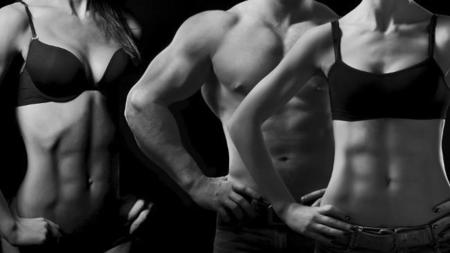

Welcome to Ejercicios de abdominales efectivos
Vientre plano ¡5 ejercicios caseros para conseguirlo!
2021.06.26 12:38
| SÍGUENOS: m Skip to content Podcast Programas Audios a la carta Atrévete ¿Qué Falló En Lo Vuestro? Dial Tal Cual Dial Latino Noticias Musica Estilo de vida Educación Belleza Salud Television Mascotas Corazón Recetas Artistas Eventos Vive Dial Premios Dial Encuentros Dial Dial Únicas y Únicos Podcast ESCAPADAS Estilo de vida
Vientre plano ¡5 ejercicios caseros para conseguirlo! Son sencillos
Nuria Serena 30/04/2021 , a las 16:43
Una chica hace ejercicios de pierna en casa
Llega el verano y a todos nos gusta lucir tipín. Hacer deporte es fundamental, pero no basta. Además, el calor es un gran impedimento para salir a la calle a hacer ejercicio.
No te preocupes porque somos conscientes de que has hecho lo imposible otras veces y no has obtenido resultado: has modificado lo que bebes y lo que comes para poder deshacerte de los incómodos michelines, pero has perdido una batalla no la guerra.
Sigue estos «truqui-consejos»
¡No hay problema!. Siempre podemos coger una esterilla o, incluso, si tenéis una colchoneta o una simple alfombra gruesa ¡y hacer diariamente unos cuantos abdominales, sentadillas y flexiones en casa !.
Hoy os queremos enseñar 5 ejercicios , para trabajar los abdominales, que son sencillos y fáciles de hacer en casa diariamente y mantener la figurilla, eso sí, ¡no os olvidéis de comer de forma apropiada siempre!.
1. Tumbados en el suelo
Túmbate sobre algo blandito , apoya la espalda en el suelo, flexiona las piernas y coloca los pies en el suelo. El ejercicio consiste en subir el tronco, utilizando los abdominales, unos 15-2o cm hacia el techo y con las manos apoyadas en la cabeza. Puedes hacer 2 series de 15 de ellos.
2. Elevación de piernas estiradas
Con este ejercicio podremos trabajar y tonificar la zona de los abdominales inferiores.
Para realizarlos correctamente debemos tumbarnos en el suelo mirando hacia arriba y con el cuerpo estirado. Colocamos las manos con las palmas pegadas al suelo y al lado de nuestros glúteos. Ahora levantamos lentamente las piernas hasta que nuestra suela apunte hacia el techo, y volvemos a bajar los pies hacia el suelo dejándolos a 10 cm del mismo.
Realizamos este ejercicio otras 15 veces en dos series.
3. Levantamiento de pelvis
En este ejercicio trabajaremos los glúteos , los músculos bajos de la espalda y los abdominales de una forma tan sencilla. Muchos de vosotros ya lo conoceréis ya que es muy conocido, sobre todo entre las mujeres.
Para ello debemos tumbarnos en el suelo con las rodillas flexionadas y los pies apoyados y miramos, una vez más, hacia el techo. Tenemos que relajar los brazos a ambos lados y subir la pelvis hacia el techo de forma que la parte baja de la espalda se separa unos centímetros del suelo, pero la alta no.
Realizamos 2 series de 20 movimientos. Debemos sentir la contracción del glúteo el subirlo, cuando lo bajemos no debemos apoyarlo en el suelo, sino dejarlo a unos centímetros.
4. Elevación piernas flexionadas
Hay que comenzar el ejercicio tumbados, mirando hacia el techo y con los brazos estirados. Es bastante sencillo. Hay que subir a la misma vez el tronco estirado y las piernas, flexionando las rodillas. Cuando bajemos no debemos apoyar el cuerpo, dejamos los pies a 10 cm del suelo y la espalda a unos 15 cm, tal y como se muestra en la foto.
Lo realizamos 10 veces en 2 series.
5. Plancha abdominal
¡No podía faltar!. Para este ejercicio tan eficaz, debemos mantener una postura estática . ¡Apuntad!.
Debemos colocarnos mirando hacia el suelo y apoyar los antebrazos con los codos a la misma altura que los hombros. Estiramos las piernas y colocamos la punta de los pies en el suelo.
Comienza el primer día intentando mantenerte arriba unos 20 segundos y cada día suma algunos segundos más . ¡Te sorprenderá lo que serás capaz de aguantar cuando pasen unas semanas!
MÁS SOBRE:
Ejercicio físico • Lo más visto audio Muere la novia durante su boda y el novio sigue adelante casándose con la hermana audio Mis amigos se casan: ¿Cuánto tengo que pagar si me invitan a su boda? Pedro Piqueras dejará de presentar Informativos Telecinco por decisión de la cadena y esta es la razón La estrategia por la que Pablo Motos ha cancelado la emisión de El Hormiguero este lunes Si te gustan las ondas surferas del mar en tu pelo con este spray de Mercadona lo conseguirás en casa Mapa Web Quienes somos/Contacta Emisoras Aviso Legal Política de privacidad Política de cookies Configuración de Cookies Una empresa de PRISA Medios Grupo Prisa El PAÍS Los 40 principales Santillana Santillana Compartir Cadena SER AS.com adn Caracol Huffington Post UNO wradio Cinco Días Cadena Dial EL PAÍS Semanal Planeta futuro Kebuena Richmond Moderna Podium podcasts El PaÍs ICON S moda loqueleo MeristationWebs de PRISA
cerrar ventana cerrar